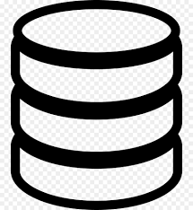

| |
about me
|
28years / lviv / freelance |
|
Prolific full stack web developer with a passsion for metrics and beating former best yets protoyed 25
new products features per year for flexor inc Full stack developers are required to be proficient
in front end development and back end web development, coding with HTML, CSS, and JS
for the client-side and maintaining databases and infrastructure server-side.
A full stack developer resume must show the CTO, CIO, or Head of IT that you are
capable in all aspects of software and web development.
|
My Services
|

development
Building a custom tailored solution based on your technical specification |
SEO optimization
Audit your website perform technical improvements and writes meta tags |

Data Base
SSL certificate installation and configuration on your website |

Data Security
strategy with leading data protection technology your critical data.
|